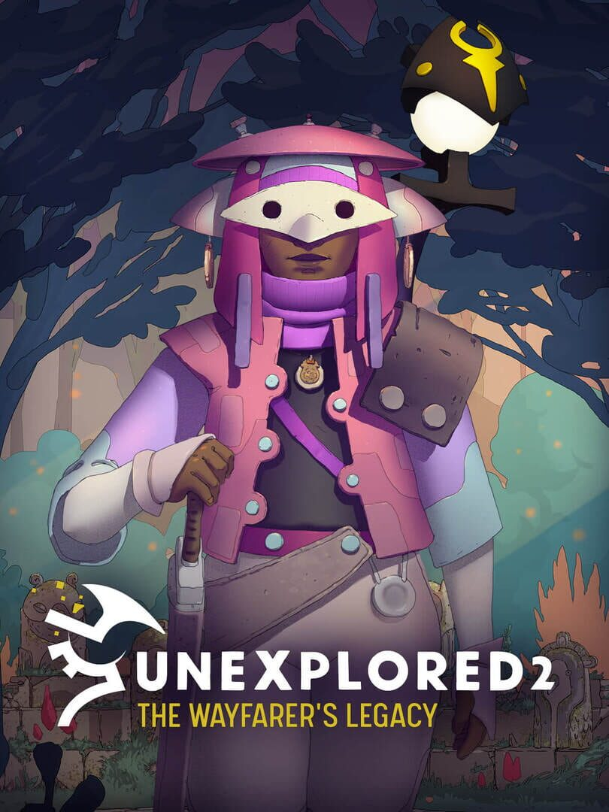

Unexplored 2: The Wayfarer's Legacy
Unexplored 2: The Wayfarer's Legacy
Details
|  | |
| Playtime | Not Played |
| Last Activity | Never |
| Added | 12/30/2023 6:40:47 |
| Modified | 12/31/2023 8:26:43 |
| Completion Status | Not Played |
| Library | Steam |
| Source | Steam |
| Platform | PC (Windows) |
| Release Date | 5/20/2021 |
| Community Score | |
| Critic Score | 60 |
| User Score | |
| Genre | Adventure Indie Role-playing (RPG) |
| Developer | Ludomotion |
| Publisher | Big Sugar |
| Feature | Single Player |
| Links | Steam Epic Wikia YouTube Discord Official GOG Twitch |
| Tag | |
Description
RPG? Adventure? Strategy? Unexplored is a genre bending adventure, a procedurally generated open-world RPG with a real table-top feel, a strategic exploration challenge. Unexplored 2 is also what you want it to be, thanks to the game's huge set of difficulty modifiers.
WARNING: the gameplay has a great systemic depth, but be warned: there's a bit of a learning curve. It WILL take some time to get the most enjoyment out of the game.
Boasting an award-winning soundtrack, a beautiful art style, and consistent, oftentimes weekly updates.
With its unique blend of challenging, strategic, and slow-paced gameplay, the emphasis here is not on combat, but on the path you carve through your actions and decisions. As you delve into the richly woven narrative and master the intricacies of the game, you'll be treated to an award-winning soundtrack and an impressive visual style, both designed to enhance your gaming experience.
And the journey doesn't stop there – Unexplored 2 continues to grow and evolve, thanks to our dedicated team's regular updates. This ongoing development is our commitment to refine, expand, and perfect your adventure.

A Procedural RPG in a Boundless World
Unexplored 2 offers a vast, rich fantasy world that unravels over several generations of Wayfarers. Our game breaks away from traditional RPG norms, eliminating grind, XP, or gold, and instead, focusing on your choices and their far-reaching consequences. As the chosen Wayfarer, you embark on a quest to destroy the Staff of Yendor, traversing varied landscapes, interacting with diverse tribes, encountering mystical creatures, and unearthing ancient ruins. Each discovery brings you closer to mythical weapons and historic items that shape your journey.
A World Finite Yet Infinite
In Unexplored 2, life and death have profound implications. Consecutive Wayfarers can try to destroy the Staff of Yendor within the same world. However, a fatal end to your final mission also means the end of your world. Permanently. So prepare well, learn all you can about the most dangerous phase of your adventure. If you fail, that world disappears. But despair not, a new world, rich with its unique history, is ready to be born. A new quest awaits.

Key Features
WARNING: the gameplay has a great systemic depth, but be warned: there's a bit of a learning curve. It WILL take some time to get the most enjoyment out of the game.
Boasting an award-winning soundtrack, a beautiful art style, and consistent, oftentimes weekly updates.
With its unique blend of challenging, strategic, and slow-paced gameplay, the emphasis here is not on combat, but on the path you carve through your actions and decisions. As you delve into the richly woven narrative and master the intricacies of the game, you'll be treated to an award-winning soundtrack and an impressive visual style, both designed to enhance your gaming experience.
And the journey doesn't stop there – Unexplored 2 continues to grow and evolve, thanks to our dedicated team's regular updates. This ongoing development is our commitment to refine, expand, and perfect your adventure.
A Procedural RPG in a Boundless World
Unexplored 2 offers a vast, rich fantasy world that unravels over several generations of Wayfarers. Our game breaks away from traditional RPG norms, eliminating grind, XP, or gold, and instead, focusing on your choices and their far-reaching consequences. As the chosen Wayfarer, you embark on a quest to destroy the Staff of Yendor, traversing varied landscapes, interacting with diverse tribes, encountering mystical creatures, and unearthing ancient ruins. Each discovery brings you closer to mythical weapons and historic items that shape your journey.
A World Finite Yet Infinite
In Unexplored 2, life and death have profound implications. Consecutive Wayfarers can try to destroy the Staff of Yendor within the same world. However, a fatal end to your final mission also means the end of your world. Permanently. So prepare well, learn all you can about the most dangerous phase of your adventure. If you fail, that world disappears. But despair not, a new world, rich with its unique history, is ready to be born. A new quest awaits.
Key Features
- []Dynamic Content Generation: Ludomotion's groundbreaking approach to content generation layers unique elements every time a new world comes into being.[]Generative Storytelling: Though the ultimate goal remains the same, each Wayfarer enjoys a distinct world, story, and set of encounters.[]Systemic Depth: Numerous game systems ensure fresh discoveries even after hundreds of hours of gameplay.[]Legacy System: Actions of past heroes resonate through time, influencing the fortunes of future adventurers. Use this legacy to bolster the odds of success for your successors.[]Distinctive Presentation: Unexplored 2 surprises with its beautiful art style, a rarity among generative games. A versatile lighting system adapts to the day and weather, setting the perfect mood for your adventure.[]Adaptive Orchestral Soundtrack: Our award-winning original score reacts to your actions and decisions, wrapping your adventure in a cloak of immersive sound.